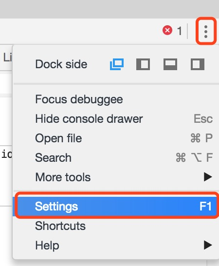
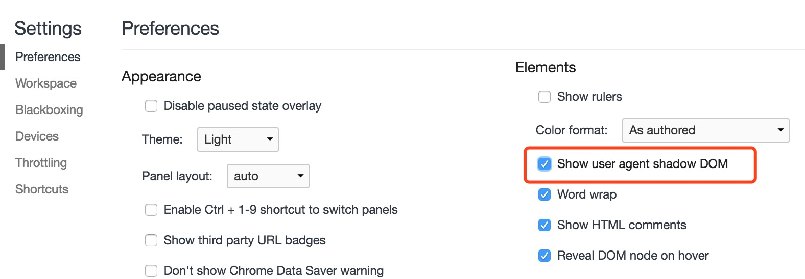
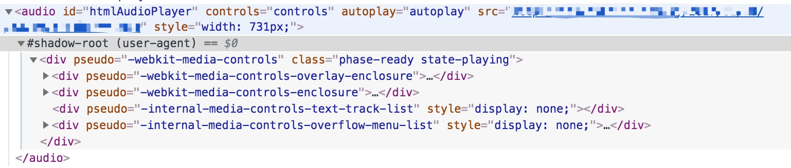
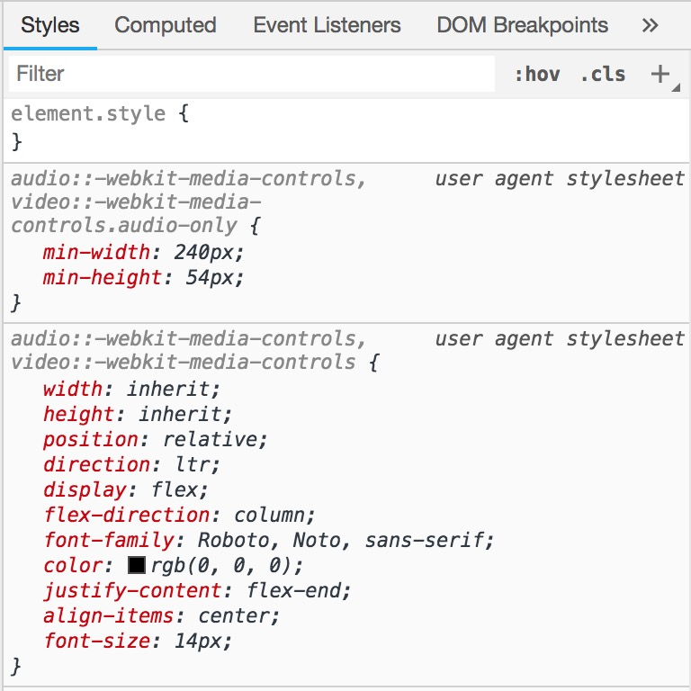
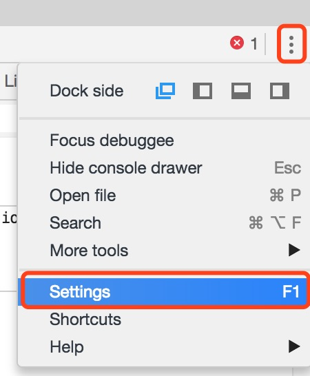
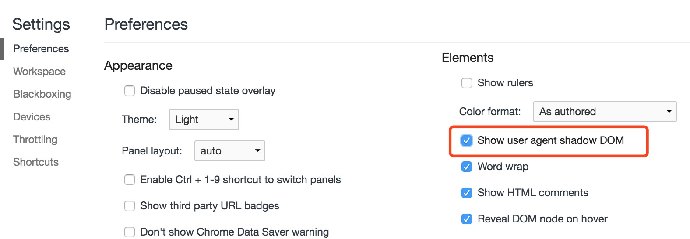
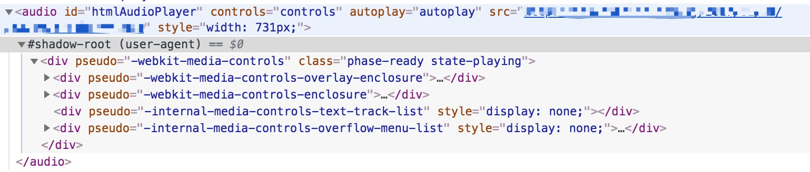
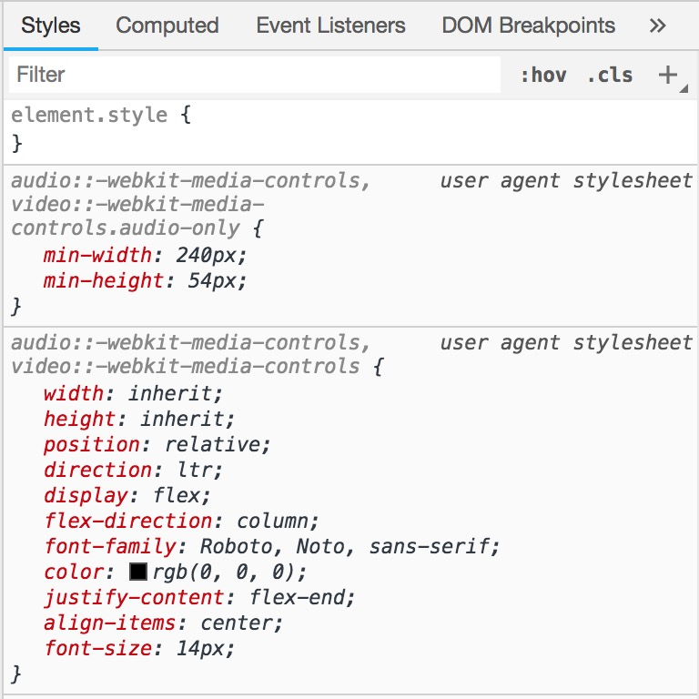

打开 Chrome 的隐藏功能
Jun 27, 2018
我们有的时候想查看 Video/Audio 之类的原生控件里面有哪些 DOM 结构或者 CSS 是怎么写的，但是审核元素的时候却看不到里面的结构，那么有没有什么办法看到呢？Chrome 为我们提供了开关 Settings|Preferences -> Elements -> Show user agent shadow DOM，开启之后就能看到隐藏 DOM 了。





我们有的时候想查看 Video/Audio 之类的原生控件里面有哪些 DOM 结构或者 CSS 是怎么写的，但是审核元素的时候却看不到里面的结构，那么有没有什么办法看到呢？Chrome 为我们提供了开关 Settings|Preferences -> Elements -> Show user agent shadow DOM，开启之后就能看到隐藏 DOM 了。



